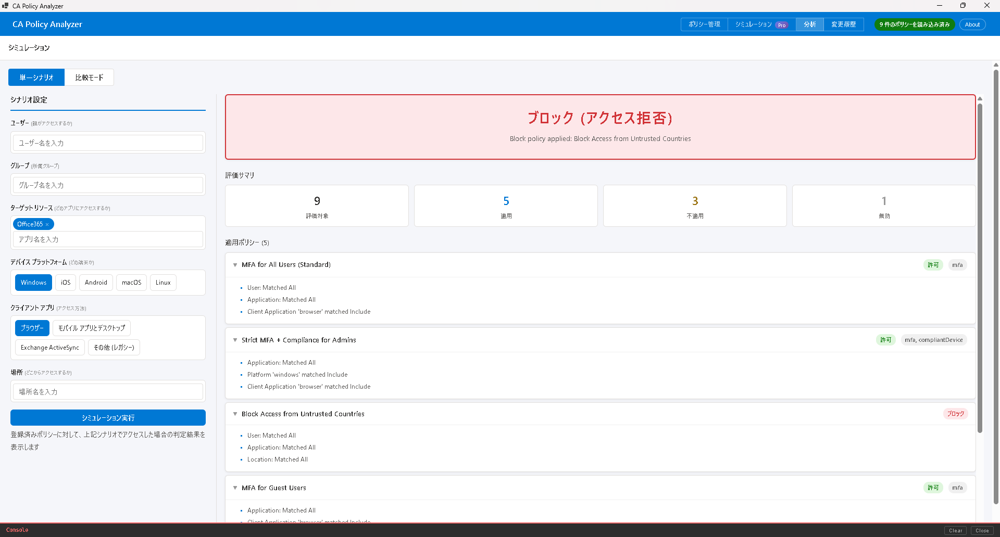
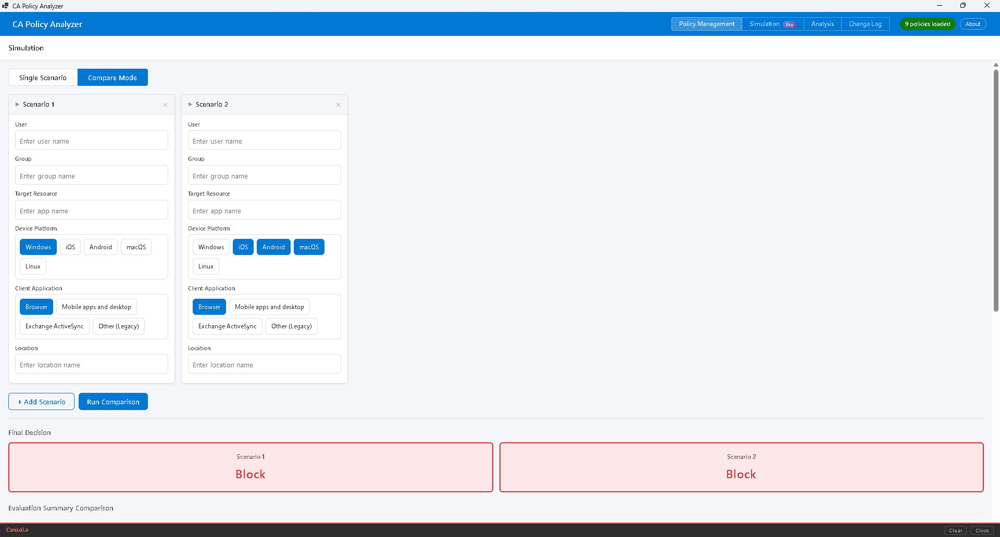

CA Policy Analyzer ユーザーマニュアル

シミュレーション機能は、「もし〇〇なユーザーが△△にアクセスしたら？」という仮定のシナリオを検証するための機能です。
登録済みの条件付きアクセスポリシーに対して、仮想のアクセス条件（ユーザー、デバイス、場所など）を入力し、その条件下でアクセスが BLOCK（ブロック） されるのか、ALLOW（許可） されるのかの判定結果を確認できます。
これにより、ポリシーを実環境に適用する前に、意図した通りに動作するかを安全に検証できます。
シミュレーション画面で、以下のアクセス条件を設定します。
| 入力項目 | 説明 |
|---|---|
| ユーザー | アクセスを試みるユーザー名を入力します。 |
| グループ | ユーザーが所属するグループ名を入力します。 |
| 対象リソース / アプリ | アクセス先のアプリケーション名を入力します。 |
| デバイスプラットフォーム | Windows, iOS, Android, macOS, Linux から選択します。 |
| クライアントアプリ | ブラウザー、モバイルアプリ/デスクトップ、レガシー認証から選択します。 |
| 場所 | 事前に登録したネームドロケーション（名前付きの場所）を選択します。 |
各入力欄はフリーテキスト入力に対応しています。テキストを入力して Enter キーを押すと項目が追加されます。複数の値を指定することも可能です。
シミュレーションを実行すると、以下の情報が表示されます。
画面上部に最終的なアクセス判定が大きく表示されます。
アクセスが許可される場合に必要となる条件（多要素認証、準拠デバイスなど）が一覧で表示されます。
| 項目 | 説明 |
|---|---|
| 評価済みポリシー | 判定対象となったポリシーの総数です。 |
| 適用ポリシー | 入力した条件に一致し、実際に適用されたポリシーの数です。 |
| 未適用ポリシー | 入力した条件に一致せず、適用されなかったポリシーの数です。 |
| 無効ポリシー | 無効状態に設定されているため、評価から除外されたポリシーの数です。 |
シミュレーション結果には、各ポリシーの評価理由が詳しく表示されます。
条件に一致して適用されたポリシーの一覧が表示されます。各ポリシーについて、どの条件が一致したかの詳細を確認できます。
条件に一致せず適用されなかったポリシーの一覧が表示されます。各ポリシーについて、どの条件が一致しなかったかの理由が表示されます。
これらの情報により、意図しないブロックや許可が発生した場合の原因を特定し、ポリシーの設定を改善できます。
比較モードでは、2 つ以上のシナリオを並べて比較できます。異なるアクセス条件を設定した複数のシナリオを横並びで表示し、ポリシーの評価結果の違いを一目で把握できます。
| ポリシー名 | シナリオ 1 | シナリオ 2 |
|---|---|---|
| MFA 必須ポリシー | Allow (MFA) | Allow (MFA) |
| 社外アクセスブロック | Block | Not Applied |
| レガシー認証ブロック | Not Applied | Block |
この比較により、条件の違いがどのポリシーに影響するかを明確に把握できます。
比較モードは Pro プランで利用できます。
CA Policy Analyzer User Manual

The Simulation feature allows you to test hypothetical scenarios such as "What happens if a specific user tries to access a particular application?"
By entering virtual access conditions (user, device, location, etc.) against your registered Conditional Access policies, you can verify whether access would be BLOCKED or ALLOWED under those conditions.
This allows you to safely verify that your policies work as intended before deploying them to a production environment.
On the Simulation screen, configure the following access conditions.
| Input Field | Description |
|---|---|
| User | Enter the name of the user attempting access. |
| Group | Enter the group(s) the user belongs to. |
| Target Resource / App | Enter the name of the application being accessed. |
| Device Platform | Select from Windows, iOS, Android, macOS, or Linux. |
| Client App | Select from Browser, Mobile apps/Desktop, or Legacy authentication. |
| Location | Select from pre-registered named locations. |
Each input field supports free-text entry. Type your text and press Enter to add an item. You can specify multiple values for each field.
After running a simulation, the following information is displayed.
The final access decision is prominently displayed at the top of the screen.
When access is allowed, the required conditions (such as multi-factor authentication or a compliant device) are displayed in a list.
| Item | Description |
|---|---|
| Evaluated Policies | The total number of policies that were evaluated. |
| Applied Policies | The number of policies whose conditions matched the input and were applied. |
| Not Applied Policies | The number of policies whose conditions did not match the input. |
| Disabled Policies | The number of policies excluded from evaluation because they are in a disabled state. |
The simulation results include detailed evaluation reasons for each policy.
Lists the policies that matched the conditions and were applied. For each policy, you can review the details of which conditions were matched.
Lists the policies that did not match the conditions and were not applied. For each policy, the reason why the conditions did not match is displayed.
This information helps you identify the cause of unintended blocks or grants and improve your policy configuration.
Comparison Mode lets you compare two or more scenarios side by side. You can set different access conditions for each scenario and view the policy evaluation results in a side-by-side format, making it easy to spot differences at a glance.
| Policy Name | Scenario 1 | Scenario 2 |
|---|---|---|
| MFA Required Policy | Allow (MFA) | Allow (MFA) |
| External Access Block | Block | Not Applied |
| Legacy Auth Block | Not Applied | Block |
This comparison makes it clear which policies are affected by different conditions.
Comparison Mode is available with the Pro plan.